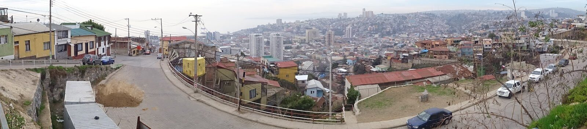
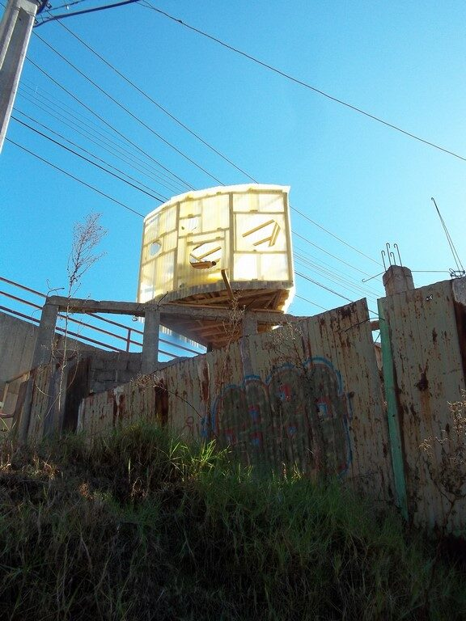
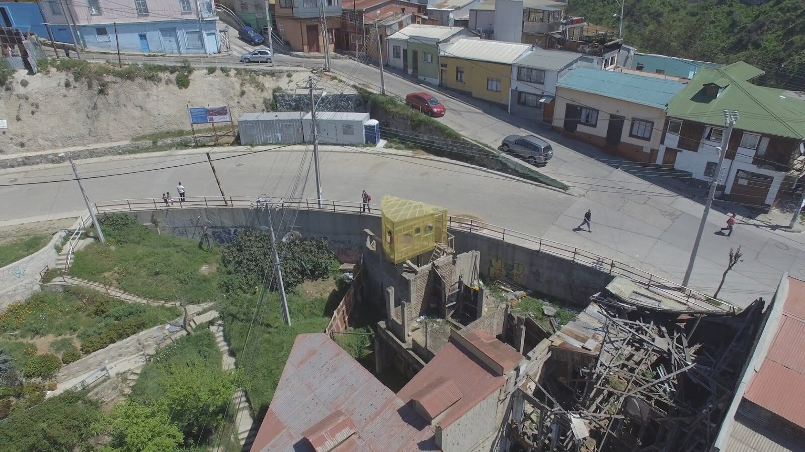
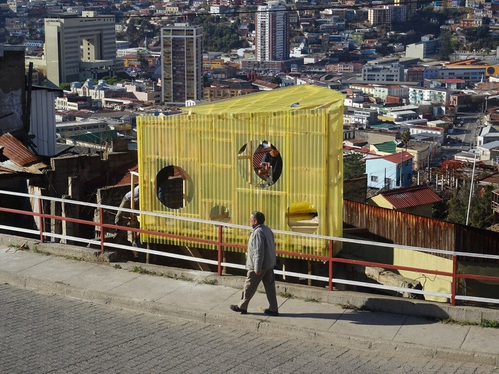
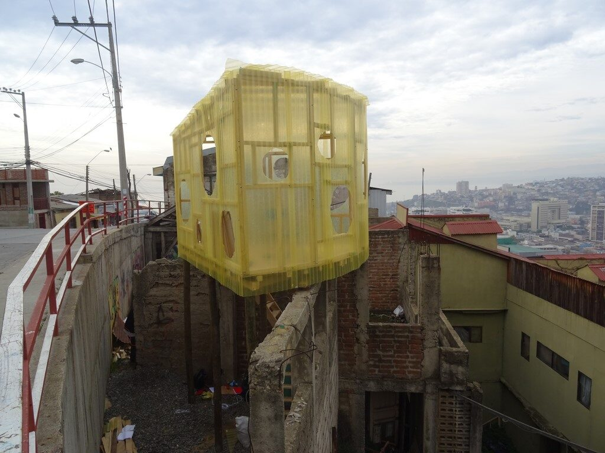

Dossier Nº 006
El Allegado Nº7 / El Gran Queso
Instalación de una pieza habitacional en altura cuya base en planta corresponde a un corte aproximado a 1/8 de circunferencia, construida con tabiquería de palos y planchas de onda traslúcidas en zinc amarillas, con ventanas circulares de distintos tamaños.
Suspendida sobre la ruina
La pieza se ubica en una punta generada por el corte que produjera el paso de la calle por encima del inmueble original, quedando suspendida en la zona superior de esta ruina, apoyada en el travesaño superior de una estructura de hormigón, asomando al vacío del cerro. Intervención en un inmueble en estado de ruina tras ser expropiado en la década de los setenta para la ampliación de la Avenida de los Cerros (Camino Cintura y Avenida Alemania).
La avenida que ondula
El trazado de esta avenida se extiende a través de los cerros, inaugurando entre ellos el andar de una mirada que ondula, como su nombre lo indica, en una constante de curvas donde la mirada oscila entre las vistas panorámicas de la ciudad, el mar y la bahía, junto a la visión de la quebrada, techos, eriazos y casas.





33°03′S · 71°37′O